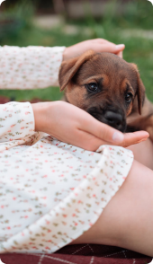

Innowacyjny dodatek -
Czarci Pazur
Zapewnia dodatkowe wsparcie w zwalczaniu stanów bólowych i zapalnych. Skoncentrowane składniki aktywne, opracowane we współpracy z lekarzami weterynarii, przynoszą szybkie i zauważalne efekty, szczególnie korzystne dla zwierząt z poważnymi problemami stawowymi.

Wygoda -
dwa sposoby podawania
- 1 Bezpośrednio do pyszczka
- 2 Zmieszany z karmą

Skuteczność -
skoncentrowana dawka
Tylko jedna porcja dziennie.
To nie tylko wygoda, ale również gwarancja, że Twoje zwierzę otrzymuje wszystko, czego potrzebuje, aby cieszyć się zdrowiem i aktywnością na długo. Skorzystaj z zalet Arthrohard i zobacz różnicę w komforcie życia swojego zwierzęcia.